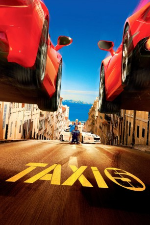
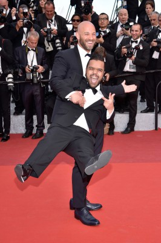
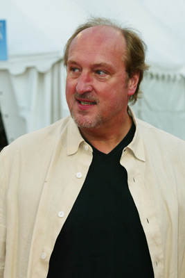
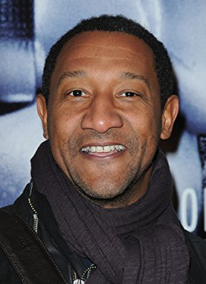
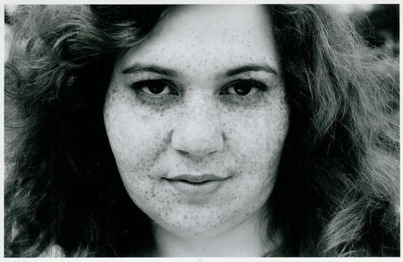
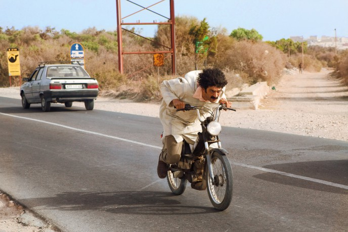
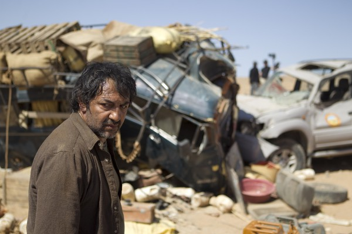

#9777 Taxi 5
 
 IMDB-Wertung: 4.7 / 10
IMDB-Wertung: 4.7 / 10  Metascore: 0
Metascore: 0 
Sylvain Marot ist ein außergewöhnlicher Autofahrer und einer der effizientesten Polizisten in ganz Paris. Nach einem Skandal wird er jedoch gezwungen, die französische Hauptstadt zu verlassen und sich der städtischen Polizei von Marseille anzuschließen. Dort treibt eine Räuberbande ihr Unwesen, die Schmuck plündert und anschließend mit einem Ferrari in Windeseile flüchtet. Aufgrund seiner Erfahrung wird Sylvain schnell klar, dass die Polizeiautos nicht geeignet sind, um die Gangster zur Strecke zu bringen. Doch da erfährt er glücklicherweise von zwei Beamten, die mit einem übermächtigen Taxi gleich vier Verbrecherbanden dingfest machen konnten. Eddy, der zuvor mit dem Cop aneinander geraten war, soll daraufhin helfen, besagten Super-Wagen zu finden...
Jahr: 2018
Dauer: 102 Minuten
FSK:
Land: Frankreich Studio: UFATonspuren:
Untertitel: Deutsch,
Auflösung: 1080p (1920x804) Größe: 6359 MB
Genre: Action, Komödie, Abenteuer, Krimi
Regisseur: Franck Gastambide
Drehbuch: Luc Besson, Franck Gastambide, Stéphane Kazandjian
Soundtrack: Bastide Donny, Charlie Nguyen Kim
Darsteller:
-  Franck Gastambide als Sylvain Marot
-  Bernard Farcy als Gibert
- Salvatore Esposito als Toni Dog
-  Edouard Montoute als Alain Trésor
 Sabrina Ouazani als Samia
Sabrina Ouazani als Samia- Sand Van Roy als Sandy
-  Sissi Duparc als Sandrine Brossard
-  Ramzy Bedia als Rachid
-  Moussa Maaskri als Lopez
- Anne Lise Schaich als Driver
- Malik Bentalha als Eddy Maklouf
- Anouar Toubali als Michel Petrucciani
- Monsieur Poulpe als Ménard
- Eric Fraticelli als Paoli
- Soprano als Baba
- David Salles als Passager menottes
- Elise Larnicol als La ministre de l'Ecologie
- Romain Lancry als Bichon
- François Levantal als Commissaire Morzini
- Bengous als Client taxi (le Mia)
- Fabrizio Nevola als Rocco
- Fatsah Bouyahmed als Tonton Hamid
- Janane Boudili als Conseillère ministre
- Frédéric Soulayrol als Médecin ministre
- Peter Thias als Père Sandy
- Elisa Bujnowskyj als Cynthia
- Lionel Laget als Régis, policier Mumu
- Gregory Fromentin als Pilote hélico
- René Maleville als René
- Arriles Amrani als Wari
- Hamza Bensahnoune als Chauffeur ministre
- Ichem Saïbi als Policier Mumu arabe
- Redouane Bougheraba als Car jacker 1
- Ichem Bougheraba als Car jacker 2
- Karim Jebli als Chauffeur VTC Block 1
- Nordine Salhi als Chauffeur VTC Block 2
- Charlotte Gabris als Journaliste Esterel
- Philippe Lesoing als Le préfet
- Cut Killer als Le DJ
- Jean-Pascal Zadi als Rasta Weed
- Pattaya als Itself, Host
- Phélipé als Itself, Host
Datei: X:\6-Hexalogie(A-Z)\Taxi\Taxi 5 (2018, FSK, 1920x804).mkv seit 28.10.2018
Festplatte: HD Collection-3(N-Z)-6(A-Z)
 Es gibt insgesamt 9 Filme in der Gruppe '6-Hexalogie(A-Z)\Taxi'
Es gibt insgesamt 9 Filme in der Gruppe '6-Hexalogie(A-Z)\Taxi'